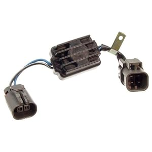
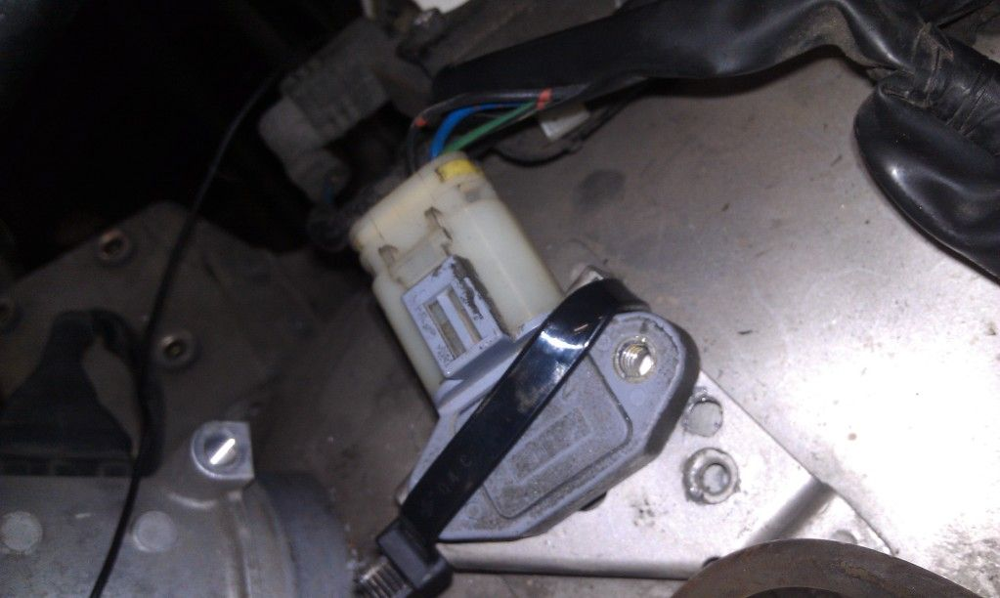

-
Re: Upgrade to PRW-2 Ign. Control Module (Power Transistor U
[quote]michaelp wrote: [quote=862sik]Really…mine "looks" like thatOriginally posted by KingmanMy Build Thread -
Re: Upgrade to PRW-2 Ign. Control Module (Power Transistor U
Here is my setup.
Its a complete assembly setup from a M30 including the black plastic cover.
The transistor is the PWR-2
-
Re: Upgrade to PRW-2 Ign. Control Module (Power Transistor U
Alright! I had gotten one from the junkyard a few weeks back thinking it was bad.
Got bored and tried again, works!
Noticed from the start, much peppier, quicker revs and smoother idle. Still has a miss and pop every once in a while. Not too bad though.
Is it bad that the bottom of the unit gets warm?
Haven't driven it around to see how much faster she feels yet -
Re: Upgrade to PRW-2 Ign. Control Module (Power Transistor U
Thats a sweet setup, I was looking at my M30 and admiring the cover and crap....too bad they're so rare. :-(manrossdamn wrote: Alright! I had gotten one from the junkyard a few weeks back thinking it was bad.
Got bored and tried again, works!
Noticed from the start, much peppier, quicker revs and smoother idle. Still has a miss and pop every once in a while. Not too bad though.
Is it bad that the bottom of the unit gets warm?
Haven't driven it around to see how much faster she feels yet
Sometimes the popping at idle is caused by the CAS going bad, too....or the car is running lean (CHTS)
amreboot wrote: Here is my setup.
Its a complete assembly setup from a M30 including the black plastic cover.
The transistor is the PWR-2
- VG30DET (HE341) 86 300ZX - 1982 280ZX Turbo - Headered NA 1986 300ZX 2+2 - 2000 Xterra - -
Re: Upgrade to PRW-2 Ign. Control Module (Power Transistor U
She's probably running rich.
Will do both of those sensors once I get the funds for timing belt/water pump and what not.
-
Re: Upgrade to PRW-2 Ign. Control Module (Power Transistor U
Rich doesn't cause the popping at idle…lean does.manrossdamn wrote: She's probably running rich.
Will do both of those sensors once I get the funds for timing belt/water pump and what not.
- VG30DET (HE341) 86 300ZX - 1982 280ZX Turbo - Headered NA 1986 300ZX 2+2 - 2000 Xterra - -
Re: Upgrade to PRW-2 Ign. Control Module (Power Transistor U
If I see another M30 and the junk yard, I will let you know.michaelp wrote: Thats a sweet setup, I was looking at my M30 and admiring the cover and crap....too bad they're so rare. :-( -
Re: Upgrade to PRW-2 Ign. Control Module (Power Transistor U

This is what my power transistor set up is, I'm just going to assume that this PWR module is not a viable upgrade without modifying the chassis harness?1987 Nissan 200sx SE V6 - daily
1995 Nissan Pathfinder SE - wheeler
-Dennis -
Re: Upgrade to PRW-2 Ign. Control Module (Power Transistor U
or an adapter harness can be made.silverton wrote:
This is what my power transistor set up is, I'm just going to assume that this PWR module is not a viable upgrade without modifying the chassis harness? -
Re: Upgrade to PRW-2 Ign. Control Module (Power Transistor U
I just did this modification. I made a small adapter harness just incase for some reason my prw goes out and I cant find another one. I can always go back to my factory one if I had to.
At idle I didnt notice much, maybe a slightly smoother idle. I revved it a bit, seemed a little more peppy. But when I drove it, it did rev much faster as I granny shifted through the gears. Pickup was much nicer and smoother. I used to have a small hickup around 2200 rpms but thats gone now. It feels as if im not making the car work as hard as before when really getting on it.
In all, it was definitly worth it. Definitly.My Build Thread -
Re: Upgrade to PRW-2 Ign. Control Module (Power Transistor U
[quote]Sharpen047 wrote:Is there a write up on how to go about that?Originally posted by silverton1987 Nissan 200sx SE V6 - daily
1995 Nissan Pathfinder SE - wheeler
-Dennis -
Re: Upgrade to PRW-2 Ign. Control Module (Power Transistor U
[quote]silverton wrote: [quote=Sharpen047]Doubtful. Buy me a S12 and I'll make a writeup for you. :nanan?reOriginally posted by silverton
Nothing in this thread applies to the S12 because as far as I am concerned until I get my hands on one, they are completely different.- VG30DET (HE341) 86 300ZX - 1982 280ZX Turbo - Headered NA 1986 300ZX 2+2 - 2000 Xterra - -
Re: Upgrade to PRW-2 Ign. Control Module (Power Transistor U
why not look in the FSM ? -
Re: Upgrade to PRW-2 Ign. Control Module (Power Transistor U
Lol

I'll make a mount once I get the motor back in and running.
2001 Mazda Miata LS
also a 1989 Nissan 240SX
50th AE Build Thread SOLD 2015 -
Re: Upgrade to PRW-2 Ign. Control Module (Power Transistor U
I used the mount from the maxima. Bent the little tab and bolted it where the factory one went. I was going to make something nicer, but oh well lol.My Build Thread

Copyright © 2006–. All rights reserved. Privacy Policy